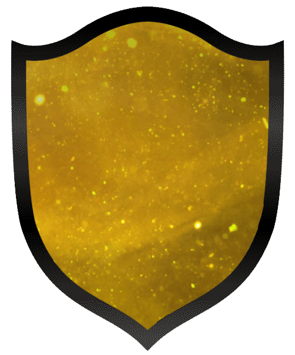
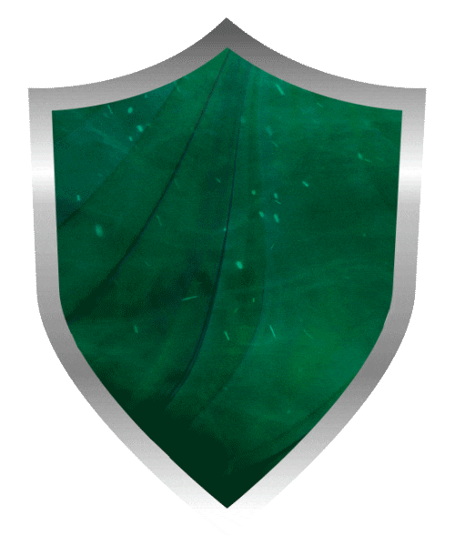
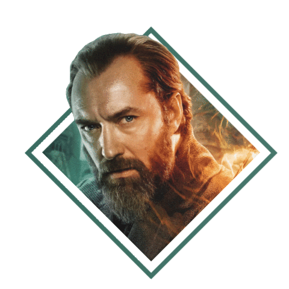
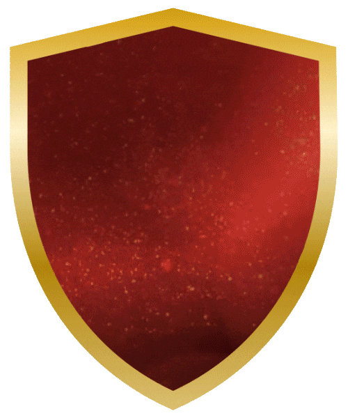

HUFFLEPUFF
Hufflepuff was one of the four Houses of Hogwarts School of Witchcraft and Wizardry. Its founder was the medieval witch Helga Hufflepuff. Hufflepuff was the most inclusive among the four houses, valuing hard work, dedication, patience, loyalty, and fair play rather than a particular aptitude in its members. The emblematic animal was a badger, and yellow and black were its house colours. The Head of Hufflepuff was Pomona Sprout, and the Fat Friar was the House's patron ghost.
SLYTHERIN
Slytherin was one of the four Houses at Hogwarts School of Witchcraft and Wizardry, founded by Salazar Slytherin. In establishing the house, Salazar instructed the Sorting Hat to pick students who had a few particular characteristics he most valued. Those characteristics included cunning, resourcefulness, leadership, and ambition.The emblematic animal of the house was a snake and the house's colours were green and silver. The patron ghost of the house was the Bloody Baron.
HEADMASTER
Professor Albus Percival Wulfric Brian Dumbledore, was an English half-blood wizard. He was the Defense Against the Dark Arts Professor, later the Transfiguration Professor, and later the Headmaster of Hogwarts School of Witchcraft and Wizardry. He also served as Supreme Mugwump of the International Confederation of Wizards and Chief Warlock of the Wizengamot. A Muggle-supporting wizard, though the absolute opposite in his earlier years, he was considered to have been the greatest wizard of all time.
RAVENCLAW

Ravenclaw was one of the four Houses of Hogwarts School of Witchcraft and Wizardry. Its founder was the medieval witch Rowena Ravenclaw. Members of this house were characterised by their wit, learning, and wisdom. The emblematic animal symbol was an eagle, and blue and bronze were its colours. In addition, Ravenclaw students tended to have abilities regarding Memory. Garrick Ollivander, for example, possessed an eidetic memory and can remember every wand he has sold.
GRYFFINDOR
Gryffindor was one of the four Houses of Hogwarts School of Witchcraft and Wizardry and was founded by Godric Gryffindor. Gryffindor instructed the Sorting Hat to choose students possessing characteristics he most valued, such as courage, chivalry, nerve and determination, to be Sorted into his house. The emblematic animal was a lion, and its colours were scarlet and gold and its house point hourglass was filled with rubies. "Nearly Headless Nick", was the House ghost.